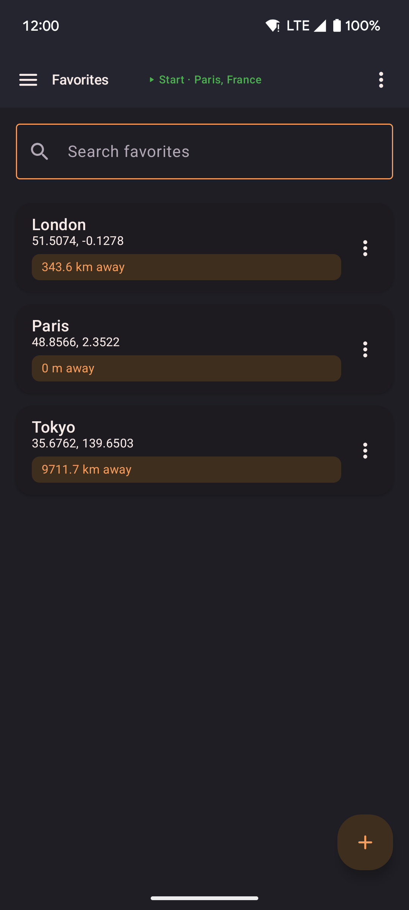
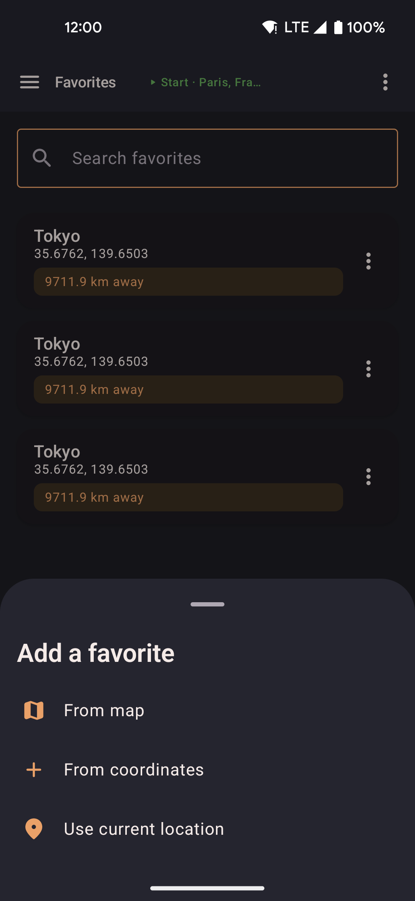
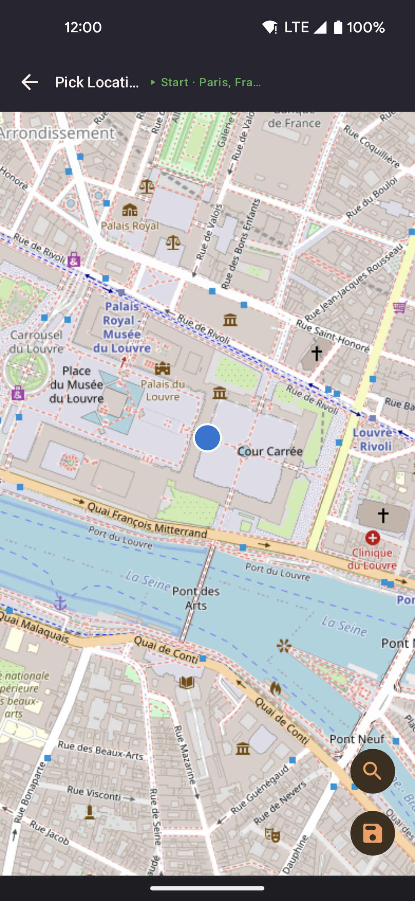

Favorites
Save named places and go to them at any time. Favorites appear on the Favorites screen and in the map's favorites sheet.

- Tap a favorite to walk there (straight line or via roads) or teleport there. Teleporting first ends any running or paused route or roam.
- The share button next to Sort sends your current location as decimal degrees, such as
11.012777, 79.480650. The widget has the same button. - Sort favorites A–Z, Z–A, newest, or oldest. The widget's favorites lists use the same order.
- The three-dot menu on a favorite lets you edit it, copy its coordinates, send them as a message, or delete it. Copy and send use
lat, lontext that you can paste back in later. They do not use a web link.
Search and categories
- The search box at the top of the Favorites screen finds favorites by name or area as you type.
- Favorites with an area, such as the hot locations below, are grouped under the area name. Favorites without an area are listed at the bottom.
- The map sheet and the widget have the same search. Closing the list clears it.
How to add a favorite
Tap the add button at the bottom right of the Favorites screen.

- From coordinates: type latitude and longitude in separate boxes.
- Paste coordinates: paste a pair such as
11.0127769, 79.48065or37°34'11.4"N 127°00'17.9"E. The app asks for a name. If you leave the app to copy the numbers, the form stays open until you save or cancel. - From map: pick a point on the map.
- Use current location: save where you are now.
The paste box on the map can also save a pasted pair as a favorite.
Hot locations
In Settings, turn on Show hot locations to add popular places around the world to your favorites. They include cities, parks, and landmarks. This is off by default.
- Turning it off removes only the entries this feature added. Your own favorites stay.
- The setting is kept when you restart the app. Export and import include it.
- Each hot location uses its country as its area name.
Map picker
"From map" opens a full-screen map. Tap to place a pin, or search for a place by name. See Settings → External services for what the search service receives.

- Search by place name to move the map to an address or landmark.
- Tap the map to move the pin to an exact spot.
- Confirm to save the pin with a name.